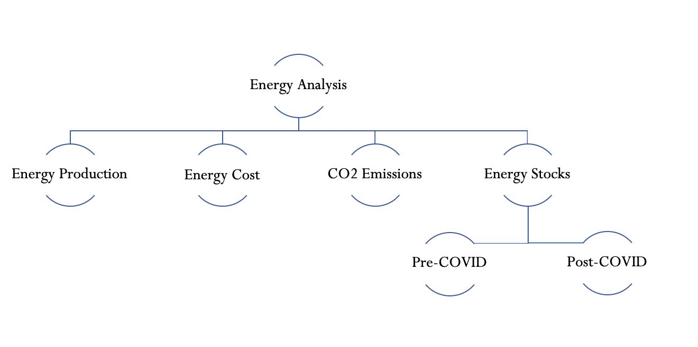
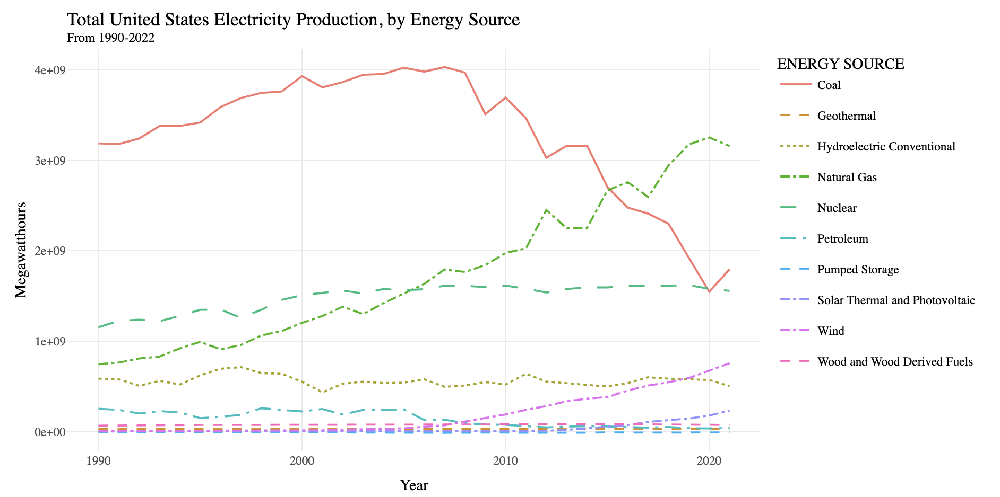
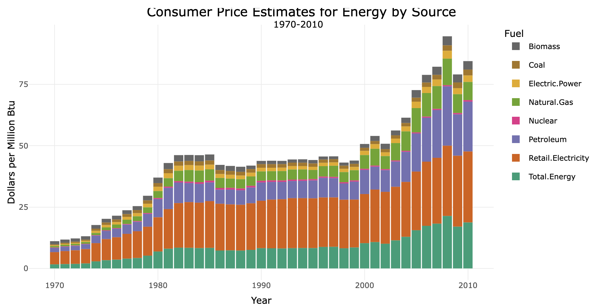
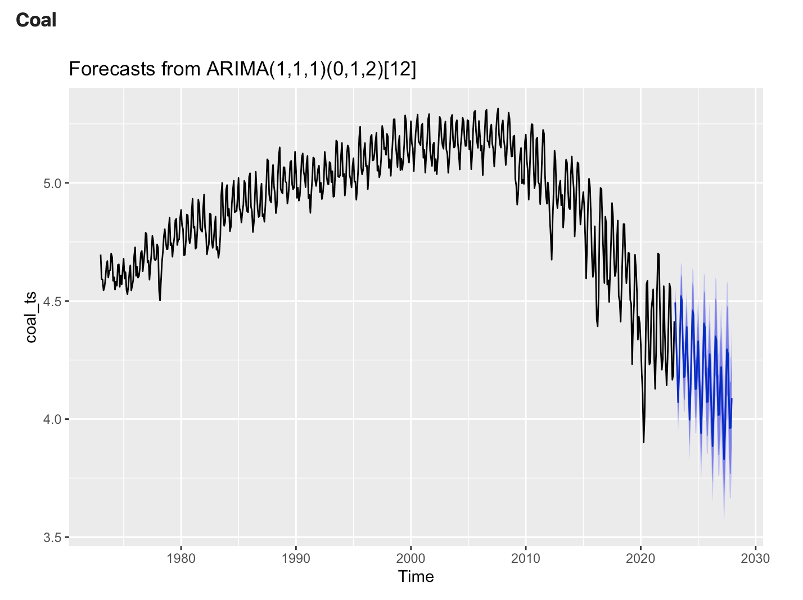
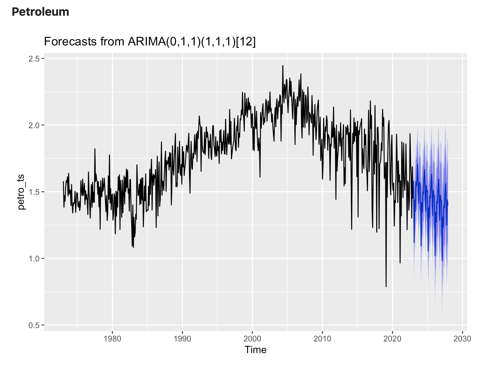
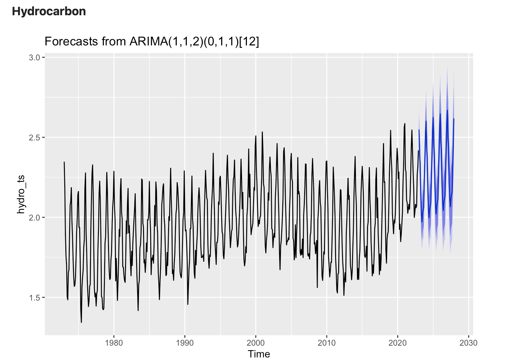
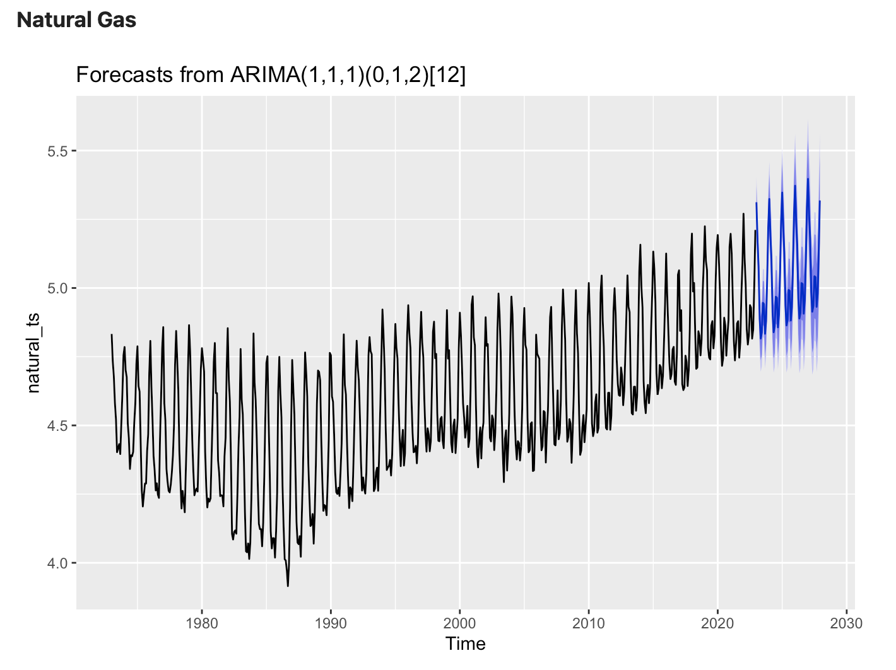
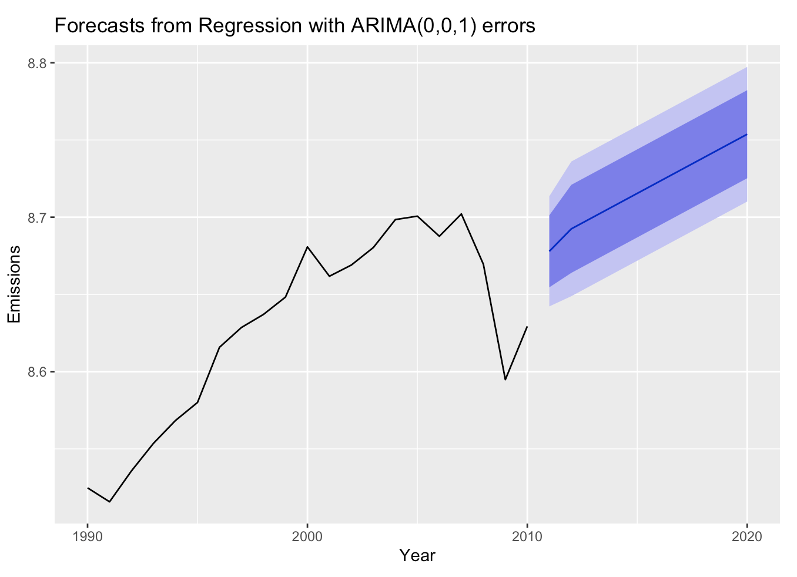
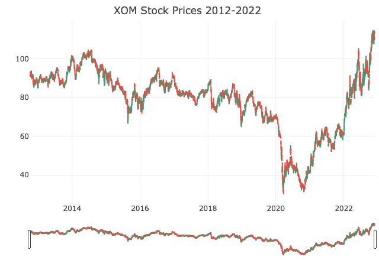
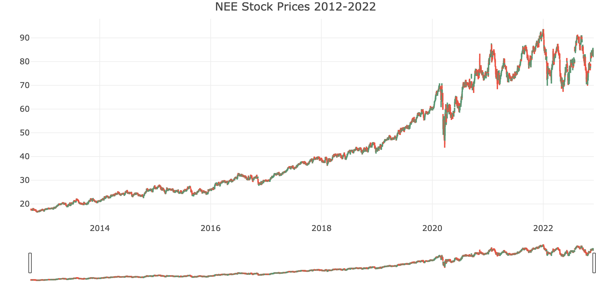

Conclusions

Energy in the United States, and worldwide, is a critically important topic for the next century as we figure out how to maintain energy resilience while minimizing the damage humanity’s energy consumption inflicts on the climate, natural world, and our own survival. This project has examined different time series datasets related to energy production, energy cost, CO2 emissions, and energy stocks in the US over the last 20-50 years in order to begin to understand how the country’s usage of different fuel sources has changed over time - and how that impacts our CO2 emissions. Below is a visual overview of this project, as well as key findings and takeaways. A mix of exploratory visualization, traditional time series models like ARMA/ARIMA/SARIMA/ARIMAX/SARIMAX/VAR models were used as well as deep learning models like RNN, GRU, and LSTM.

Total electricity production across fuel sources
One of the key findings of this analysis is how the United States’ energy production has changed in the past 30 years. Coal is historically the country’s most popular fuel source, and thus the fuel source that is produced at the highest rates. However, coal is also the dirtiest and worst fuel source as it produces more pollution than any other energy source. According to Enova Energy Group, “coal produces just 44% of US electricity, [and] it accounts for 80% of power plant carbon emissions.” However, when looking at production of different fuel sources it looks like coal production has decreased since 2007. This is largely driven by the rise in natural gas - another fossil fuel but a cleaner fossil fuel than coal. To be clear, natural gas still contributes to air pollution and CO2 emissions heavily and has other risks associated with it like drilling and fracking costs. Its chemical structure is also more effective at trapping heat in the atmostphere than coal - and thus is a fuel source to be avoided in the long term. However, given its influence in driving the US away from coal and petroleum it is an interesting possibility to use natural gas as a bridge fuel source in the short term. Another interesting and critical fuel source to focus on is nuclear power. Nuclear is one of the most freely available and easy to produce renewable energy sources in the world as it’s emission free and “saves about 2.4 billion tons of carbon emissions per year” (EEG). There are many public safety concerns about nuclear power given its radioactive waste and disasters like Chernobyl that affect public opinion of the fuel. However, it’s clear from the chart below that nuclear power is a renewable fuel source that doesn’t face the same production and storage constraints as other renewable fuels like solar and wind and thus should be invested in further.

Total cost of electricity production across fuel sources
Another critical part of answering this big picture question about Energy in the US was understanding how much different fuel sources cost the consumer over time. Wider adoption of cleaner energy is contingent upon its economic competitiveness with traditional fossil fuels. Coal, petroleum, and natural gas have all trended upwards since 1970 (not adjusted for inflation), facing a 536%, 1,183%, and 1,088% increase respectively. Cleaner fuels like biomass have grown 167% while nuclear power grew 245% since 1970. Building on the findings above, where we saw that nuclear was an important contribution to the US’ fuel arsenal and was produced in much higher quantities than other renewables, we see that nuclear is by far the cheapest fuel source. It beats even coal and biomass, and even though building new nuclear power plants is expensive they are relatively cheap to run. Given its production capabilities, relative economic benefits, and environmental and health benefits, nuclear power absolutely one of the best choices for powering the US into a cleaner future.

Individual CO2 emissions projections
The reason for looking at all of this data is to get a better sense of which fuel sources contribute the most to CO2 emissions currently, and how that is forecasted to change in the future. As the US and the world grapple with ways to change our fuel consumption to fight climate change, clean up the air and water, and prevent as much CO2 combustion as possible, it’s important to understand CO2 emissions projections for each possible fuel source. Looking at extremely dirty fossil fuel sources (coal, petroleum, hydrocarbon) and comparing their projected CO2 emissions with that of the slightly cleaner natural gas can provide insights into how CO2 emissions are projected to change if we continue on a business as usual path. Unfortunately, detailed information on CO2 emissions for fuel sources like nuclear, wind, and solar were unavailable at this time. A key takeaway from the graphs below is that CO2 emissions from Coal and Petroleum are forecasted to decrease in the next 5 years at current rates. This is great news! Hydrocarbon gas (e.g. methane, ethane, propane, and butane) are also fossil fuels and CO2 emissions from their combustion is unfortunately expected to increase over the next 5 years. We can decrease hydrocarbon gas emissions by reducing meat consumption (methane) and implementing electric stoves instead of gas stoves (propane, etc.). Finally, CO2 emissions from natural gas is expected to increase as well. This makes sense, as seen above natural gas production is steadily increasing to fill in gaps left by coal production. Ensuring that we rely on natural gas only as a bridge fuel source to cleaner fuels (such as nuclear, wind, geothermal, etc.) is critical in order to reduce total CO2 emissions. ARIMA and SARIMA models were used to understand this question.
|  |  |
|  |  |
Total CO2 emissions projections
Based on the above, it makes sense that total CO2 emissions (predicted from production and cost time series data) are forecasted to increase! The current infrastructure in the US and globally is still heavily dependent on fossil fuels - which produce far more CO2 than renewable fuels. Unfortunately, even though natural gas is cleaner than coal or petroleum, it is still extremely damaging for the environment. Thus, seeing a projected increase in natural gas production is still a troubling outcome and absolutely contributes to the forecast seen below. In order to adddress this, we need to identify clean fuels that have the same production capacity as fossil fuels and are cheaper than fossil fuels. At this time, nuclear is likely the best fuel to address these needs. ARIMAX and VAR models were used to understand this question.

Financial Analysis
The final key takeaway is how the stock market is reflecting America’s current views on energy. Many banks and other entities’ investment portfolios have historically invested in fossil fuels. JP Morgan Chase is the “largest funder of fossil fuels cumulatively since the Paris Agreement” (CNN) while Citi, Wells Fargo, and Bank of America are also culprits in this area too. Not only do large financial institutions invest in fossil fuels, but it’s historically been a strong set of stocks to invest in for the every day stock trader. Thus, it was important to see how Exxon stacked up against Nextera, a top clean energy stock. The results show that Exxon stock has had significantly more volatility after the start of the COVID-19 pandemic than it did previously - exacerbated by the war in Ukraine - which makes it a riskier investment for people. Nextera, on the other hand, has continously grown over time - both pre and post COVID-19. This lack of volatility makes it a safer investment option for financial groups and I hope that the market continues to reflect a continued interest in clean energy investments. ARCH and GARCH models were used to understand this question.
 
Impacts of this analysis
Until the US pivots entirely to fuel sources like nuclear, solar, or wind power our total projected CO2 emissions will continue to rise. It is a complicated problem to solve and requires significant infrastructure investments to make happen. Building new nuclear plants, wind turbines, and solar panels costs money and the storage problem for solar and wind needs more funding to research and solve. Once plants are built, then further infrastructure is necessary to deliver that energy to people’s homes and buildings! Additionally, there are powerful fossil fuel lobbyists that make it difficult for Congress to pass the necessary legislation, regulation, and funding bills to make change like this happen. There are also other factors to consider such as jobs for those who work in the fossil fuel industry. Ideally, a shift to clean energy creates many new jobs, but it’s not a simple 1:1 switch and will thus take time to phase out. However, understanding the problem is the first step to identifying solutions. This analysis primarily aims to better understand how different fuel sources contribute to climate change, and what the future looks like if we continue business-as-usual practices. Hopefully, with a better grasp of the data, the US can make more informed decisions about energy that serve the health of the environment and all US citizens.